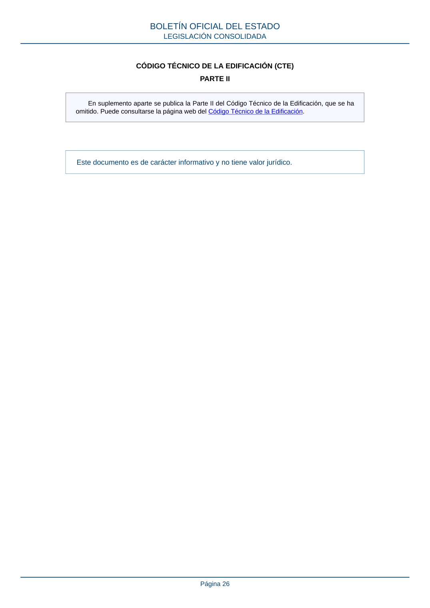

Real Decreto 314/2006: aprobación y Parte I del CTE · edición 2022-06-15 · capa oficial
Documento RD-314-2006-oficial · SHA-256 del PDF 298090e145f5558aceae49702b2ce132fe8fe8671bd87d650217c6a24bdd65ba
Copia fiel del PDF fuente · Fuente oficial
Texto extraído y reorganizado: Basado en datos de la Agencia Estatal Boletín Oficial del Estado. PDF reproducido: Fuente de los datos: Agencia Estatal Boletín Oficial del Estado.
Formatos: JSON del segmento · Markdown
CÓDIGO TÉCNICO DE LA EDIFICACIÓN (CTE) PARTE II En suplemento aparte se publica la Parte II del Código Técnico de la Edificación, que se ha omitido. Puede consultarse la página web del Código Técnico de la Edificación. Este documento es de carácter informativo y no tiene valor jurídico. BOLETÍN OFICIAL DEL ESTADO LEGISLACIÓN CONSOLIDADA Página 26
